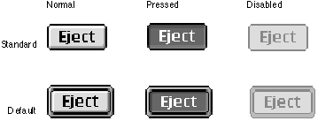

Default Buttons
Dialog boxes and control panels which use push buttons should include a default button. The default button should be the one that the user is most likely to click. However, if the most likely choice is at all destructive (e.g. erasing a disk, deleting a file), you should consider defining the Cancel button as the default.The default push button displays a ring whose appearance is coordinated with the state of the button. Figure 2-3 shows the three states of standard and default push buttons.
Figure 2-3 Standard and default states of push buttons

Default push buttons are activated by pressing the Return or Enter keys. When there is no default push button, pressing Return or Enter has no effect on push buttons.
For more information on laying out push buttons in dialog boxes, see "Push Button Layout" (page 68).